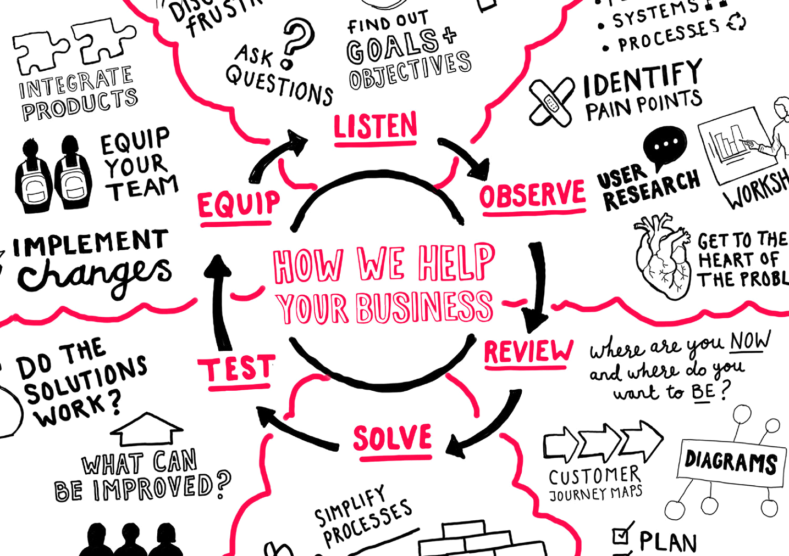

Business Analsis
La Business Analysis a beaucoup évolué ces dernières années pour aller au-delà de la « simple » assistance à maîtrise d’ouvrage. Le travail commence maintenant souvent en amont d’un projet, au cours de celui-ci et se poursuit à la suite du déploiement de vos applications pour accompagner le changement.
Nos Business Analysts, certifiés CBAP®, vous apporteront leur expertise et leurs techniques .